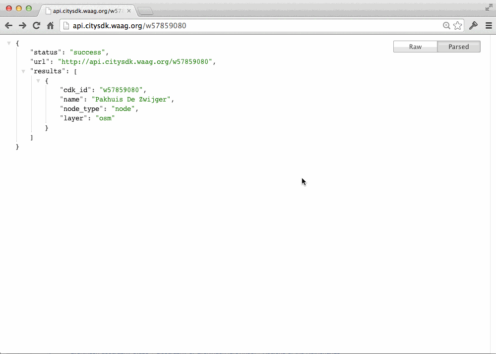

Available data
Public transport ●
parking ●
traffic information ●
weather forecasts ●
bicycles ●
addresses ●
POIs
CitySDK Linked Data API
Data from different data sources
One unified REST API

Concept (1)

Concept (2)

Concept (3)
URI for each object
API for a read/write city
1. public transport stops and departure times around a point in Amsterdam
Public transport stops in the Amsterdam

Real-time transit data
2. real-time events in Utrecht, Amsterdam

Arts Holland - API

Arts Holland - Map
3. statistical data in Groningen, Zwolle
CBS Groningen

CBS Zwolle
4. Water levels in NL, in RDF::turtle

Turtle
5. JSON & RDF/Turtle
Soon: GeoJSON, JSON-LD
SmartCitizenKit

SmartCitizenKit - CitySDK LD API
6. Travel time & costs to destination for Amsterdam as API
Parking API